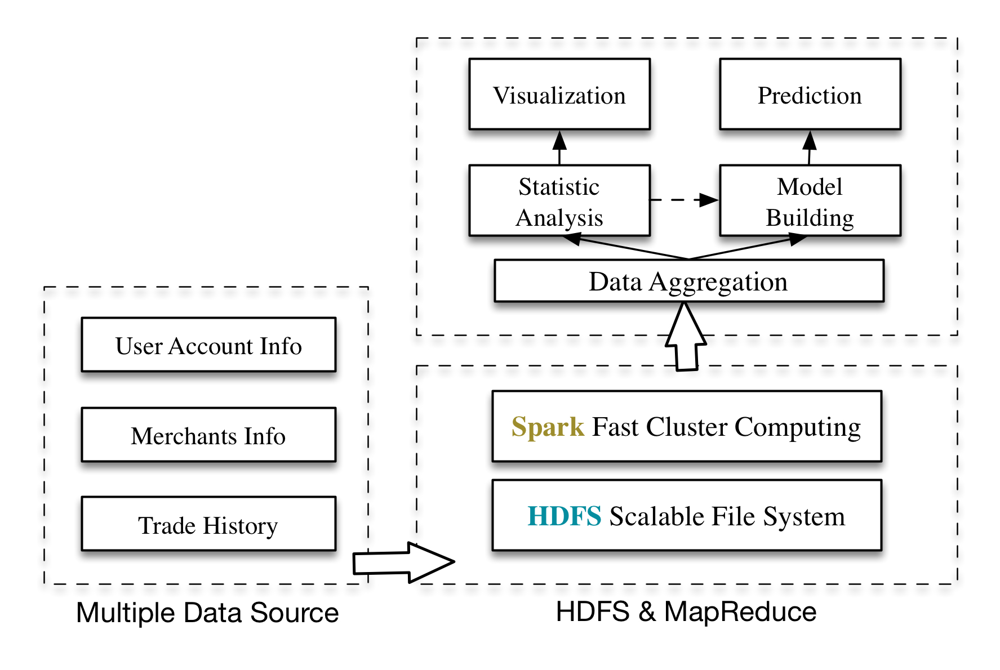

EMC杯智慧校园开放数据大赛
| 主办单位： | 交大网络信息中心 |
| 赞助单位： | EMC卓越研发集团 |
| 指导单位： | 交大学生工作指导委员会 |
| 合作机构： | 上海气象局、上海交大后勤集团 |
| 承办单位： | Kesci校园比赛平台 |
| 协办单位： | 电院学生会、交大数据分析俱乐部 |
比赛介绍
- 面对社会、科研、企业对于大数据人才的紧迫需求，上海交大网络信息中心联合EMC卓越研究集团，于2015年4月共同举办“EMC杯上海交大智慧校园数据分析大赛”。这次数据分析大赛将开放校园数据，并启动数据训练营，鼓励同学和社会人士参与到大数据的学习和实践之中。
- 大赛面向国内高校的大学生以及社会各界人士，上海交大开放上万学生的校园卡消费数据和无线网路流量数据，让学生和社会人士都能够参与到校园数据的分析和探索，积累数据分析的实践经验，并探究大学生的行为规律，提出校园管理的政策建议。
- 本团队主要针对校园卡消费数据结合多源数据，分析了各食堂的客流及消费情况，用户消费倾向、行为，以及影响因素，并对食堂之后的客流及消费情况做出预测和评估。
数据集介绍
- 校园卡一卡通数据集由上海交通大学一卡通的消费记录产生，消费包括了食堂餐饮、洗浴、超市购物等，是大学校园生活的另一个角度的体现。
- 气象数据包括：温度、降雨量、风速等，时间粒度为每10分钟一个采样点。
- 数据集由交大网络信息中心和OMNILab联合提供。
- 详情请点击：一卡通数据介绍 气象数据介绍
整体框架
- 本团队主要针对校园卡消费数据结合多源数据，分析了各食堂的客流及消费情况，数据存储于HDFS，计算基于Spark，整体框架及数据流图如下。
